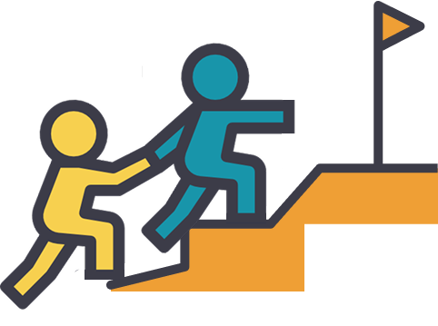
Leading what's next in Powermind
Powermind was a startup company when I joined the project. Their aim was to add new features to their app to increase engagement and user time in the app. Because it's a pre-recorded meditation app, users usually use the app only the amount their meditation lasts and only once a day, so from 10 to 40 min depending on the meditation. They also asked for UX improvements on the flow for guided hypnosis.
"We want to develop new features in order to increase the average time and user retention."
70% of Powermind’s users are women from 18 to 65 years old. They have problems dealing with stress, focusing, or wish to find a way to sleep better. They open the app, choose a meditation and when the meditation is over, they stop using the app right away.
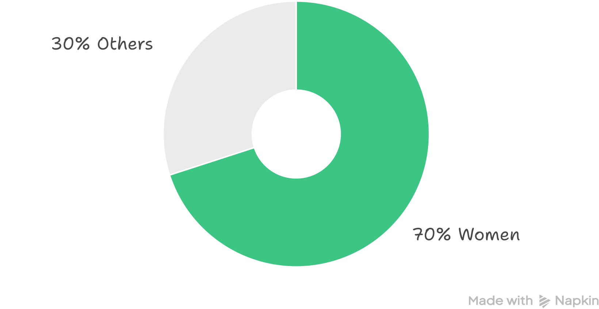
Powermind is a meditation and productivity mobile app that helps you relax, focus and sleep better. It offers pre-recorded soundtracks for meditation, relaxation, focus, sleep, guided hypnosis, and mindfulness, as well as a booking system for private therapy sessions and classes.
We added a help feature, re-organised the structure of the information, added a “continue listening/last listened” section, ability to download meditations, and proposed a new look and feel.
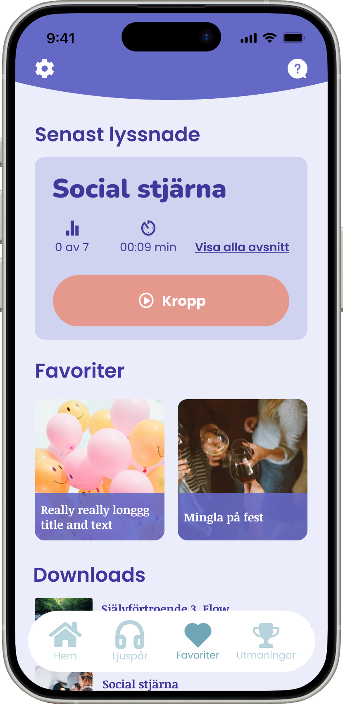
- New features in the current look and feel.
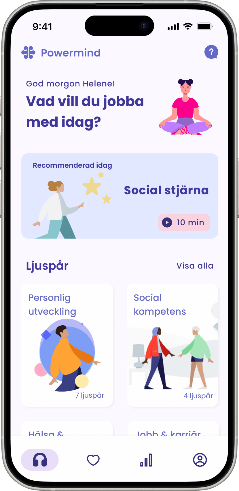
- New features in the proposed look and feel.
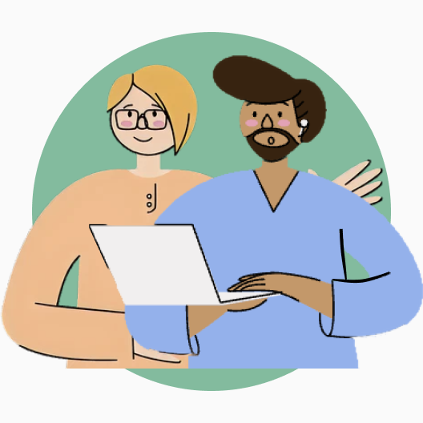
- Two Project &
Company owners
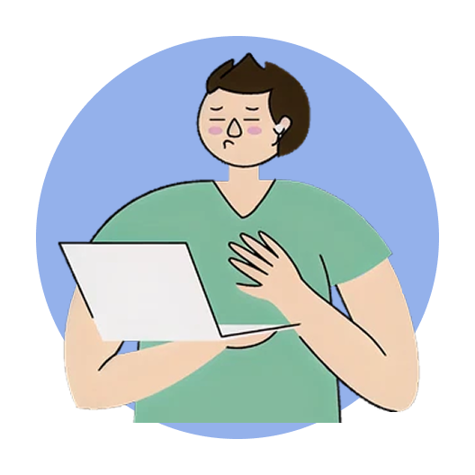
- One Backend developer
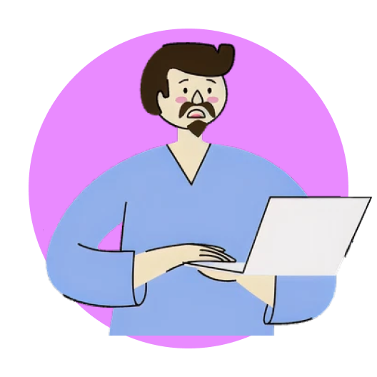
- One Fullstack Developer

- One UI/UX designer (Me)
Powermind did not have a design file yet, so I started by creating the original app in Figma for archive purposes, and to have a baseline. This made it easier to design some quality of life improvements. Among the changes I made were removing the carrousel for the filter, reorganized the menu, making the help chat easier to find, and be able to listen to the tracks offline.
- Home tab before changes.
- Filter and track detail before changes.
Then I held a workshop with the stakeholders so we could all understand the product, provide ideas through crazy 8, and agree on the work ahead. At the end of the workshop we selected the features to be designed and developed.

- The modified (gamification) model canvas used in the workshop.
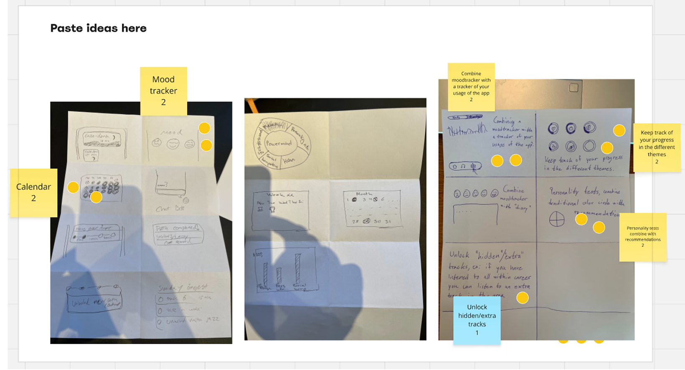
- Snapshot of some of the crazy8 ideas.
From the results of the workshop I designed some medium fidelity wireframes to discuss with the POs and then some high fidelity wireframes. I also delivered a cleaner interface to reflect mindfulness and a relaxing environment, while keeping some colour to reflect the vitality of the company.
Closer look at the product
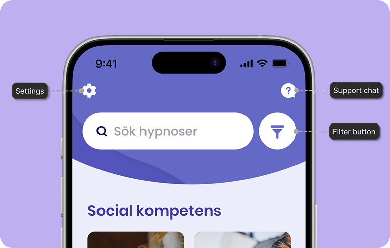
Improvements
Easy to find support chat, changed the carrousel filter for a button and added a dedicated section for the settings.
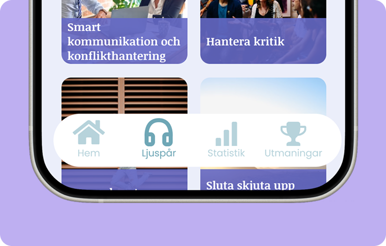
Expanded bottom navigation
Added two more sections in the navigation, to further engage users.
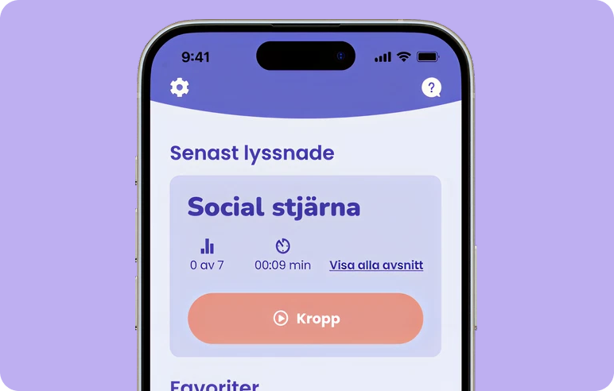
Last listened
Section in favourites where the last track listened is shown for quick access.
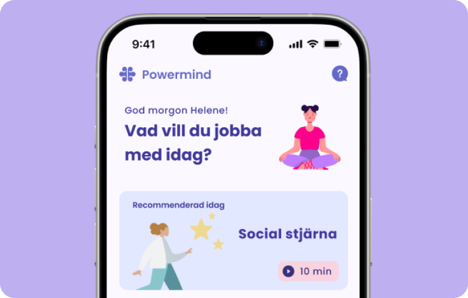
Suggestions
Added a sections for recommended or highlighted meditations to expose the user to new tracks.
Accessible documentation. Make sure that all the documentation is kept in a place where anyone on the team can easily access them. This way there won't be any misunderstandings and it can cut down the amount of meetings needed.
Make sure the objectives are crystal clear. Challenge and ask more about the Project owners' thought processes and define the goal for the project before deciding on a roadmap.